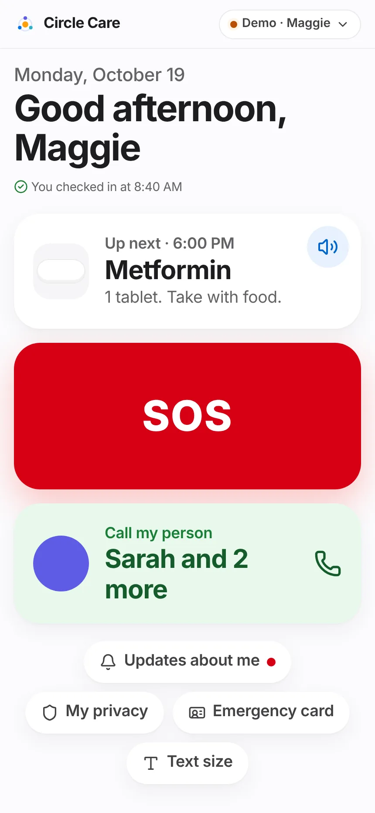
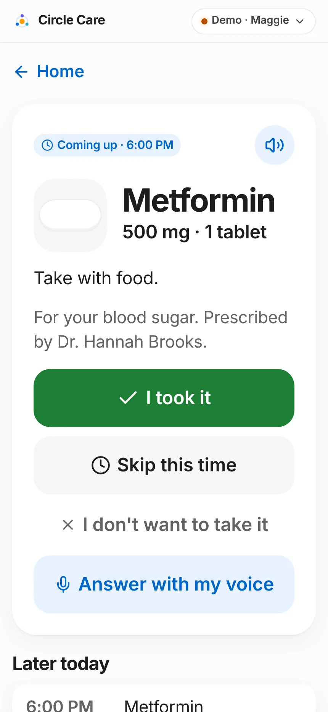
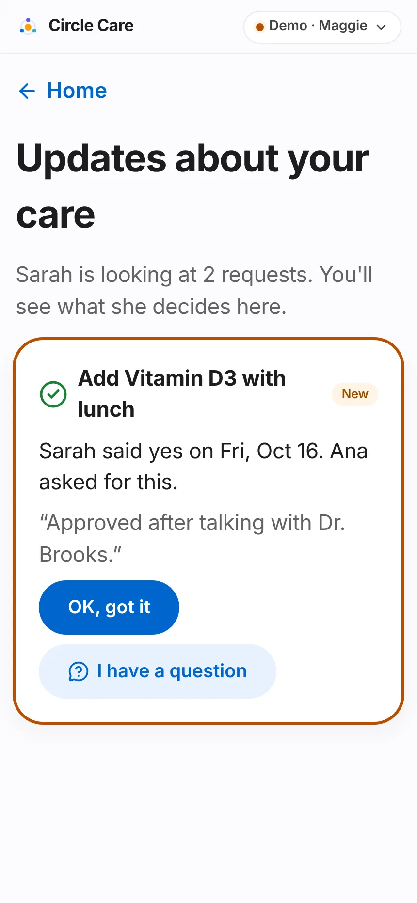
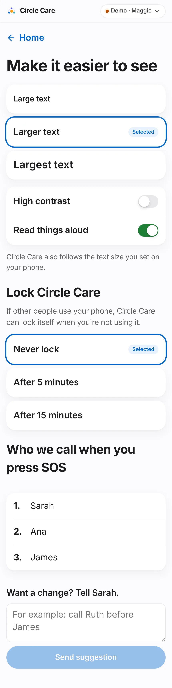
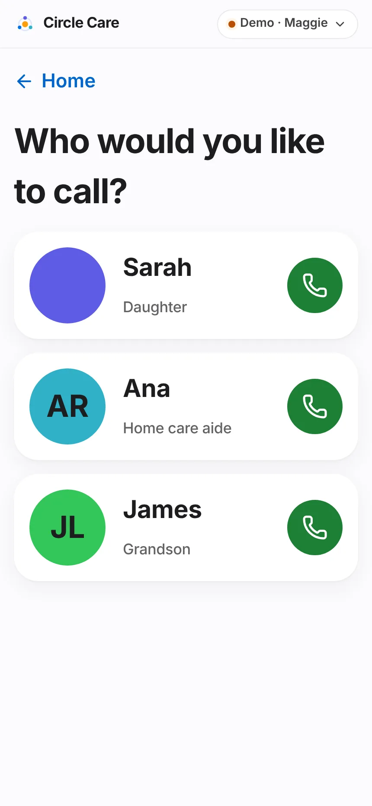

Elder experience¶
Overview¶
What. A deliberately small app for the older adult: one home screen with three large actions — What's next, SOS and Call my person — plus a morning "I'm OK" check-in, medicine reminders that can be read aloud or answered by voice, a list of decisions made about her care, and simple display settings.
Why. The landing page puts it plainly: "Designed for 81, not 21." Older adults abandon apps with menus, small text and jargon. Every elder screen shows one thing at a time, in large type, with buttons of at least 48 px.
Business value. The elder is the person whose adoption the whole circle depends on. A simple, respectful experience increases dose confirmation and daily check-ins (both inputs to the North Star) and reduces worried phone calls for the guardian.
User journey¶
- Maggie opens the app and sees today's date and a greeting — "Good morning, Maggie" (before noon), "Good afternoon" (until 5 PM), "Good evening".
- From one hour before the check-in window opens until she checks in, a banner asks "How are you this morning?" — "Let Sarah know you're OK." She taps I'm OK. Toast and spoken confirmation: "Sarah will see you're OK". The banner becomes "You checked in at 8:40 AM".
- The What's next tile shows the single most important item, e.g. "Up next · 6:00 PM — Metformin — 1 tablet. Take with food." A speaker button reads it aloud.
- She taps the tile to open the reminder card (see below) and answers I took it, Skip this time or I don't want to take it.
- The red SOS tile opens the hold-to-send screen (SOS & emergency).
- The green Call my person tile ("Sarah and 2 more") opens Who would you like to call? with large photo cards for up to three favourite people; each is a one-tap phone call.
- Below the tiles: Updates about me (a red dot when there is a new decision), My privacy, Emergency card and Text size.


Reminder card (CC-39, CC-40, CC-73)¶
- The card shows a badge (Time to take it · time when due, Coming up · time otherwise), a drawing of the pill in its real colour and shape, name, strength and dose, instructions and "For your blood sugar. Prescribed by Dr. Hannah Brooks."
- I took it → "Great — marked as taken". Skip this time → "OK — marked as skipped".
- I don't want to take it → "That's your choice. Would you like to tell Sarah why? (optional)" with a free-text box ("For example: it upsets my stomach") → Send → "Got it. Sarah will see your note".
- Answer with my voice → "Listening… say "I took it" or "skip"". The answer is recorded the same way as a tap.
- Later today lists up to five upcoming doses and tasks.
- When the next item is a task (e.g. Drink a glass of water), the card shows a single Done button → "Nice work!".
Updates about me (CC-65)¶
- Updates about your care lists every decided request: "Sarah said yes on Mon, Oct 19. Ana asked for this.", Sarah's note, and a New badge until Maggie taps OK, got it.
- I have a question opens a text box → Send to Sarah. Sarah sees "Maggie has a question" at the top of Approvals.

Make it easier to see (CC-70, CC-14, CC-48)¶
- Text size: Large, Larger (default) or Largest text, each shown at its real size.
- High contrast and Read things aloud switches.
- Lock Circle Care: Never lock (default), After 5 minutes, After 15 minutes — "If other people use your phone, Circle Care can lock itself when you're not using it."
- Who we call when you press SOS shows the numbered escalation list. Want a change? Tell Sarah. sends a suggestion ("For example: call Ruth before James").


Functional details & business rules¶
"What's next" selection (nextUp() in src/data/selectors.ts)¶
| Priority | Shown when | Label |
|---|---|---|
| 1 | Any dose that is due, late or escalated (not yet recorded) | Time for your medicine · time (amber text) |
| 2 | The earliest upcoming dose, if it is no later than the next open task | Up next · time |
| 3 | The next task not yet done whose time is no more than 60 minutes ago | Up next · time — "With Ana" or "Just for you" |
| 4 | Nothing left | Nothing else today — Enjoy your day. |
Dose states used by the reminder¶
| State | Rule (minutes after scheduled time) |
|---|---|
| Upcoming | More than 15 minutes before the time |
| Due | From 15 minutes before until the caregiver threshold (30 min; 15 for high-priority) |
| Late | Until the guardian threshold (60 min; 30 for high-priority) |
| Escalated | After the guardian threshold |
| Taken / Skipped / Refused | A dose record exists |
A gentle repeat reminder is pushed to the elder 10 minutes after an unconfirmed dose time (CC-39).
Daily check-in¶
| Rule | Value |
|---|---|
| Window | 08:00–10:00 by default (guardian Settings) |
| Banner appears | From window start − 60 minutes until she checks in |
| Mood | The home-screen button records 😊 ("Pleasant"); mood feeds the guardian's Health view |
| Missed | After the window ends, one more prompt to Maggie; 15 minutes later, the guardian is alerted (Alerts) |
| Only Maggie | elderCheckin refuses any other actor and logs a denied entry |
Voice confirmation (src/lib/voice.ts)¶
| Rule | Value |
|---|---|
| When shown | Only if the browser exposes a speech-recognition API with an on-device availability check |
| On-device only | Recognition runs with processLocally = true. If the browser reports recognition is not available on device (or the check takes over 4 seconds), voice stays off: "Voice answers aren't available on this device without sending your voice to the internet, so we've left them off. Please tap a button." |
| "Taken" words | took, taken, take, done, yes, did |
| "Skipped" words | skip, later, not now, no (checked first) |
| Anything else | "I heard "…". Please tap a button instead." or "I didn't catch that. Please tap a button instead." |
| Storage | No audio or transcript is stored |
Text sizes¶
| Option | Base font size |
|---|---|
| Large text | 19 px |
| Larger text (default) | 22 px |
| Largest text | 26 px |
The elder app also follows the phone's own text-size setting.
Permissions & privacy¶
| Action | Rule (src/data/policy.ts and store guards) |
|---|---|
| Record her own dose | doses: write — elder allowed |
| Complete her own task | tasks: write — elder allowed |
| Check in, ask about a decision, suggest SOS-list changes | Elder only (actor check in the store) |
| Change her display, lock, sharing and emergency-card settings | Allowed for the elder via the ELDER_SETTINGS allow-list even though settings: write is guardian-only |
| Read decisions | approvals: read — elder and guardian |
Her choice is respected
"I don't want to take it" is recorded as Refused with her optional reason, not as a failure. Caregivers see "Declined" and the guardian sees the reason in the activity feed and weekly digest.
The elder's own views are logged in the access log (e.g. "viewed her home screen") but excluded from suspicious-access detection.
Notifications¶
| Trigger | Recipient | Lock-screen text | In-app detail |
|---|---|---|---|
| Dose 10 minutes past due, unconfirmed | Elder | You have a reminder from Circle Care | Time for Medicine — dose. Instructions |
| Check-in window ended | Elder | You have a reminder from Circle Care | Good morning, Maggie. Tap "I'm OK" so Sarah knows you're fine. |
| Maggie asks about a decision | Guardian | You have a new message in Circle Care | Maggie has a question about "title": question |
| Maggie suggests an SOS-list change | Guardian | You have a new message in Circle Care | Maggie suggested a change to her SOS list: "text" |
| New appointment added | Elder | Update from Circle Care | New appointment: title on date at time. |
The elder app has no notification bell; banners appear briefly and tapping one returns to the relevant elder screen.
Accessibility¶
- Three primary targets, each the full width of the screen; all elder touch targets ≥ 48 px; settings rows ≥ 64–72 px.
- Text sizes up to 26 px base (≈ 200% of standard), high-contrast mode, and respect for reduce motion.
- Read-aloud uses the browser's on-device speech synthesis at a slightly slower rate (0.92).
- Every tile has a full spoken label, e.g. "Up next · 6:00 PM: Metformin. 1 tablet. Take with food."
- Radio groups for text size and lock use
role="radio"witharia-checked. - Colours tuned to WCAG 2.1 AA 4.5:1 including on soft tints (CC-71); avatar initials switch between white and near-black for contrast.
- axe-core:
/app/elder,/app/elder/next,/app/elder/privacy,/app/elder/settings— 0 violations.
Data captured¶
| Field | Entity | Written by |
|---|---|---|
date, at, mood |
Checkin |
I'm OK |
medId, date, time, status, by, at, verified=false, reason |
DoseLog |
Reminder card |
taskId, date, by, at |
TaskLog |
Task Done |
elderSeen, elderQuestion |
Approval |
Updates about me |
textSize, highContrast, readAloud, elderLockMin |
Settings |
Settings |
Edge cases & error states¶
| Situation | Behaviour |
|---|---|
| Speech synthesis unsupported | Speaker buttons are hidden |
| Voice not available on device | Voice button disappears after the first attempt with an explanation |
| Dose recorded twice | The newer record replaces the earlier one for that dose slot |
| Maggie answers a dose that is only "Coming up" | Allowed — the record is saved with the current time |
| No favourites active | Call tile shows "Family" with a phone icon |
| All items done | "You're all done for today" |
Test coverage¶
| Type | Test |
|---|---|
| E2E | Elder holds SOS, countdown, sends (signs in as elder, checks Call my person) · Guardian approves request; elder sees decision (New badge, OK, got it) · CC-14 elder lock option; CC-48 elder suggests SOS-list change |
| Unit | rules.test.ts — repeat dose reminder to the elder; missed check-in prompts the elder first (CC-52). health.test.ts — mood mapping from check-in faces |
| Accessibility | axe-core on four elder screens |
Known limitations & production gaps¶
| In the prototype | In production (planned) |
|---|---|
| Reminders appear only while the app is open | Native or web push with exact-time scheduling; critical alerts for SOS (Roadmap R2) |
| The home check-in always records 😊 | Choose a face (the mood scale already supports six) |
| Voice works only where on-device recognition exists (few browsers today) | Native on-device speech on iOS and Android |
Calls are tel: links |
Native calling, video calls (R4) |
| English only | Spanish, Chinese and Tagalog (R2) |
| Elder lock uses the same simulated Face ID | Platform biometrics |